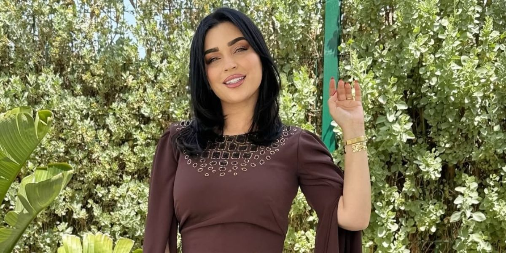
Africa Golden Awards: Best African Actress
Article · In Arabic
READ ARTICLEImage published by GHALIA · LE SITE INFO
PRESS & MEDIA
Interviews, encounters and perspectives on my journey.
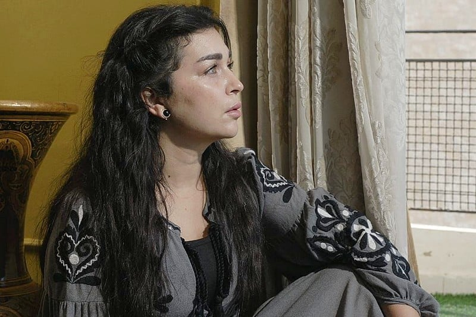
FEATUREDImage published by HESPRESS
Farah El Fassi talks to Hespress about this Moroccan-Qatari co-production and filming across the two countries.
READ ARTICLEOriginal article: Hespress · In Arabic
INTERVIEWS & VIDEOS
Honest conversations
about cinema, life and projects.
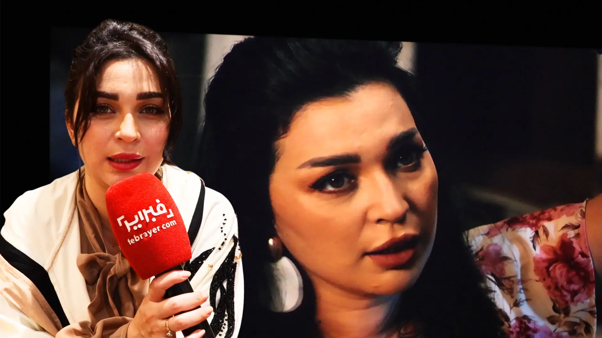
FEBRAYER
Image published by FEBRAYER · Article in Arabic
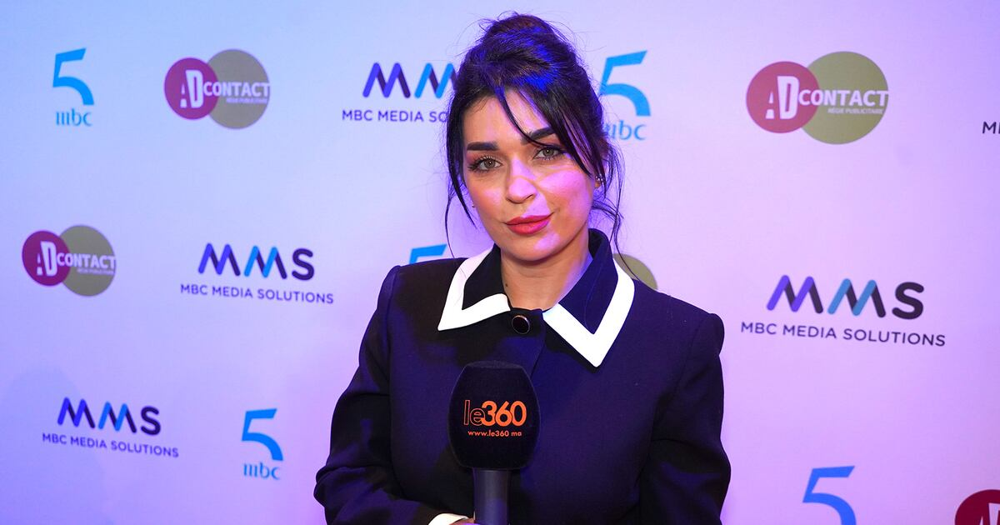
LE360
Photo: K. Essebar / Le360 · Article in French

Article · In Arabic
READ ARTICLEImage published by GHALIA · LE SITE INFO
Video · In Arabic
WATCH INTERVIEWImage published by FEBRAYER
Article · In Arabic
READ ARTICLEImage published by HESPRESS
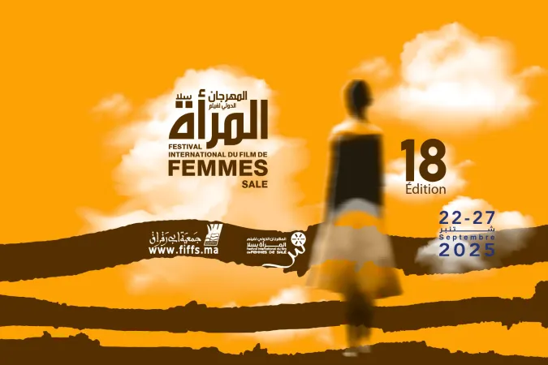
Article · In French
READ ARTICLEImage published by Maroc.ma
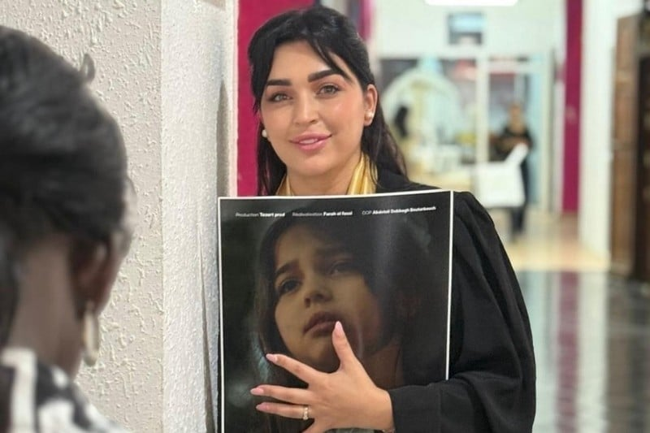
Article · In Arabic
READ ARTICLEImage published by HESPRESS
Video · In French
WATCH INTERVIEWPhoto: K. Essebar / Le360
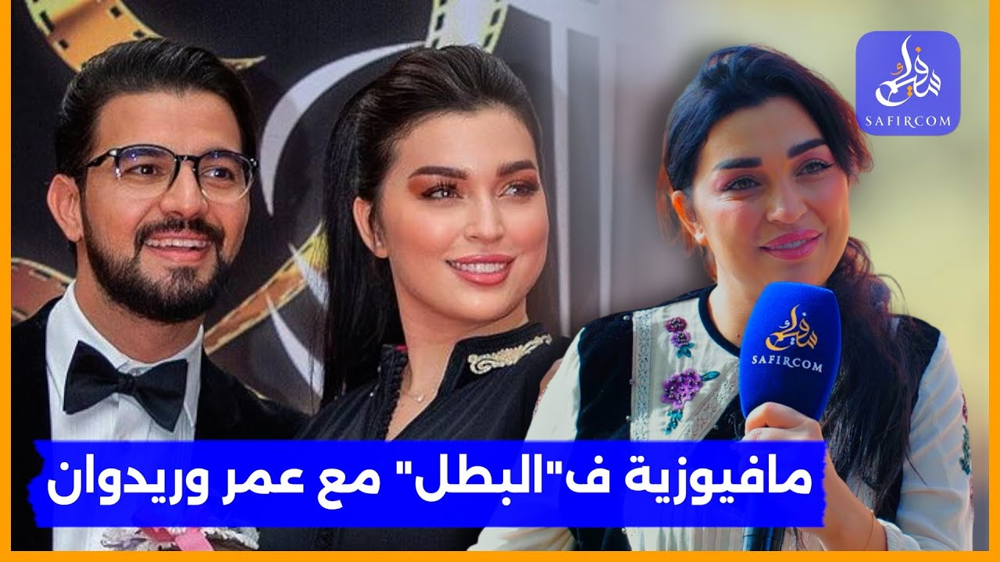
Video · In Arabic
WATCH INTERVIEWImage published by SAFIRCOM
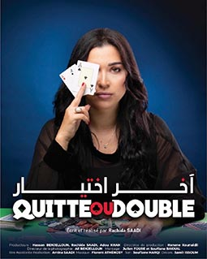
Article · In French
READ ARTICLEImage published by FAMILLE ACTUELLE
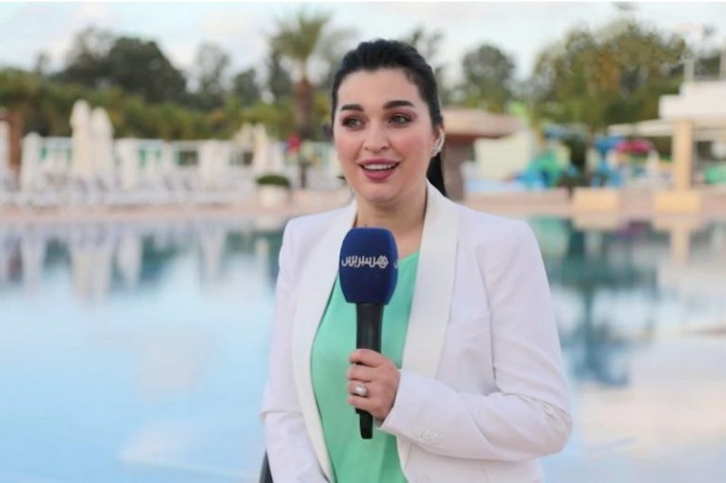
Interview · In Arabic
READ INTERVIEWImage published by HESPRESS
Video · In Arabic
WATCH INTERVIEWImage published by AKHBARONA
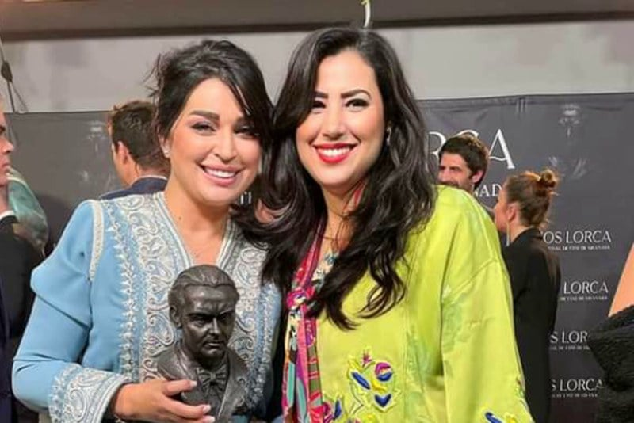
Article · In Arabic
READ ARTICLESocial media / via Hespress
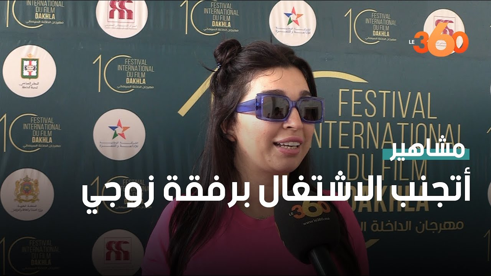
Video · In Arabic
WATCH INTERVIEWImage published by LE360
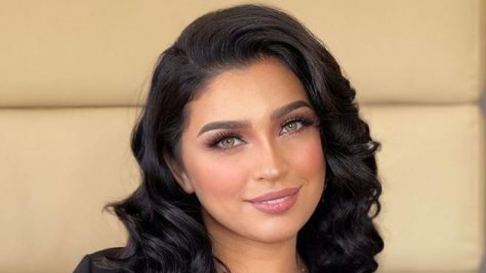
Interview · In French
READ INTERVIEWPhoto: D.R. / Le360
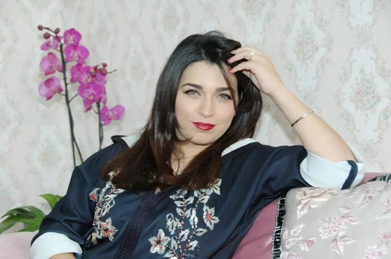
Interview · In Arabic
READ INTERVIEWImage published by MACHAHID
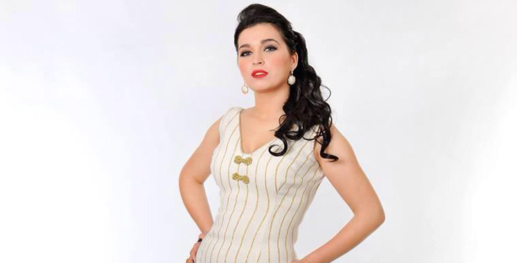
Interview · In French
READ INTERVIEWPhoto: D.R. / Aujourd’hui le Maroc
Introductions are presented in English. Articles and interviews open on the original publisher’s website, in their original language.
PRESS RESOURCES
For an interview, a profile
or an invitation, get in touch.
More
stories to share.